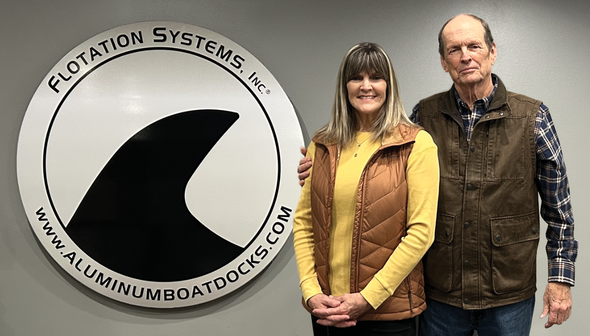
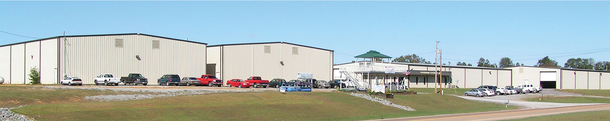
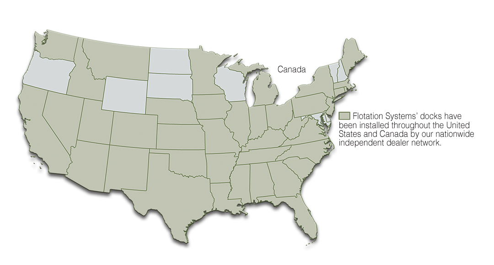

About Us

FSI Father and Daughter Team: Melanie Powe, General Manager and President, Jimmy Conn
The Innovation of an Idea
Flotation Systems, Inc. owner and president, James (Jimmy) Conn, founded the company in 1992. He applied his extensive engineering background to a creative and innovative idea that would revolutionize the residential dock industry. By thinking “outside the dock”, Jimmy replaced traditional building methods and materials to develop, and introduce, the first residential all-aluminum boat dock system to the market. And, that was just the beginning of 30+ years of redesigning, enhancing, refining and building the “last boat dock you’ll every buy.”
Designed with uncompromising structural integrity and attention to detail, Flotation Systems (FSI) docks are ultra-strong, will not rust or rot and are virtually maintenance-free! As the companion to FSI aluminum structural design, Jimmy invented revolutionary LockDry® Aluminum Marine Decking — standard on FSI docks and voted the most superior marine decking in the industry. LockDry marine decking provides a patented, gapless floor decking and watertight roof covering with single-layer construction.
As the original developer and manufacturer of the all-aluminum dock system, FSI set the industry standard that other manufacturers still follow today…leading the way to offer families, and the commercial industry, a stronger, more durable, time-saving and carefree solution to life on the water.
In 1995, Melanie Powe joined her father, Jimmy, in the family business, assuming responsibilities for marketing, sales and advertising of their “Original All-Aluminum Boat Dock™.” It didn’t take long for the advantages of FSI docks to command a market share in the growing wave of nationwide lake property development.


Meeting Demands in Production, Waterways and Weather
To accommodate local and national demand from lake homeowners and marinas, FSI moved its operations to facilities of over 100,000 sq. ft. of manufacturing space. Melanie assumed the role of General Manager and FSI established a nationwide authorized independent dealer network. These changes strengthened FSI’s commitment to customer service for maintaining comparable production, delivery and installation lead times.
FSI quickly realized that with more lake development, traffic on waterways would increase and docks would have to withstand harsher conditions. Jimmy, Melanie and FSI design engineers went back to the drawing board and created WAVEPro Technology — state-of-the-art engineering to master demanding water and weather conditions. Every FSI dock is built with WAVEPro’s stabilizing technology.
Dedicated to expanding dock styles, color choice and designs, FSI identified specific needs for further “outside the dock” solutions. They did not have to look far for ideas and inspiration.
Fueled by phenomenal employee enthusiasm and management direction, employee-run businesses came on board, and on-site. Connected to the main FSI plant, PowderTec readily supplies beautiful, highly-durable dock finishes, in an endless variety of powder coated colors and textures, to match customer imagination and creativity. Additional employee and family-run businesses have partnered with FSI to offer option and accessory products that enhance the fun, function and safety for FSI dock owners’ “Home on the Water”.
Today, Melanie is General Manager, working in concert with an unsurpassed team of talented manufacturing and engineering personnel, while Jimmy offers a behind-the-scenes expertise in design and structural questions. Everyone at FSI — from friendly receptionists to authorized dealers — is committed to providing personalized, superior service and incomparable products. It is this close, family-team concept that has made Flotation Systems, Inc., one of the largest boat dock manufacturers in the United States.
Pride in Product Workmanship
Flotations Systems continues the tradition of offering a limited lifetime warranty* on residential boat docks installed by FSI or an authorized, independent dealer. The combination of high-grade aluminum, stainless steel hardware and precise engineered construction makes “the best dock warranty you’ll probably never need,” consistent with the pride held for every part of the production and installation process. Multiple quality control check points ensure accuracy from time of purchase, to engineering and drafting, to manufacturing, staging, prep and loading. FSI and its nationwide independent dealer network is responsible for educating you before, during and after the sale to ensure that you are fully satisfied with your decision to choose a Flotation Systems aluminum dock…Your Home on the Water…for All Seasons.